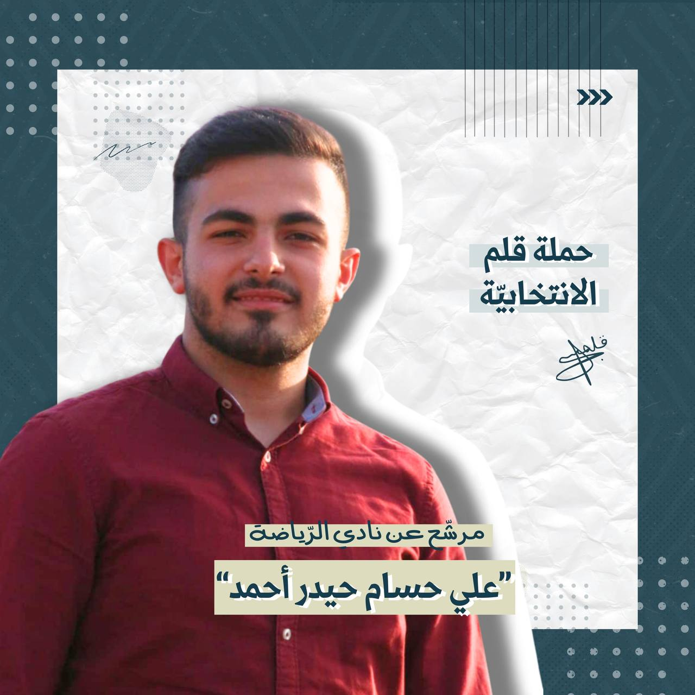

كليّة الهندسة
سنة ثانية
مؤهلات:
لاعب نادي النجمة وكابتن دون ٢٠ سنة
لاعب منتخب لبنان تحت ١٨ سنة عام ٢٠٢١
كابتن منتخب جامعة المعارف
شهادة تدريب من الإتحاد
كليّة العلوم
سنة ثانية
مؤهلات:
لاعب كرة قدم و مشارك في الكثير من الدورات
لاعب بينغ بونغ و بادمينتون و الكرة الطائرة والعديد من الرياضات
المختلفة
مشارك في العديد من الدورات التدريبية و التمرينية
كليّة العلوم
سنة ثانية
مؤهلات:
خبرة ٨ سنوات في فنون الدفاع عن النفس
مركز أول في بطولة لبنان للكاراتيه عام ٢٠٢٠
مركز أول في ٣ بطولات مختلفة
مشارك في العديد من الدّورات التّدريبيّة

كليّة الهندسة
سنة ثانية
مؤهلات:
لاعب كرة قدم وحائز على العديد من الميداليات
لاعب كاراتيه ومواي تاي وبينغ بونغ وكرة طائرة والعديد من الرياضات
الأخرى
لاعب في منتخب المدرسة لكرة القدم دون ١٥ سنة
مشارك في العديد من الدورات التدريبية التأهيلية
حائز على المركز الأول في العديد من الدورات للقوة البدنية
كليّة العلوم
سنة ثانية
مؤهلات:
خبرة ٧ سنوات في فنون الدفاع عن النفس
مركز أول في البطولة العربية للكاراتيه عام ٢٠٢٢
مركز أول في بطولة لبنان للكاراتيه عام ٢٠٢١
مركز أول في العديد من البطولات الأُخرى
مشارك في العديد من الدّورات التّدريبيّة